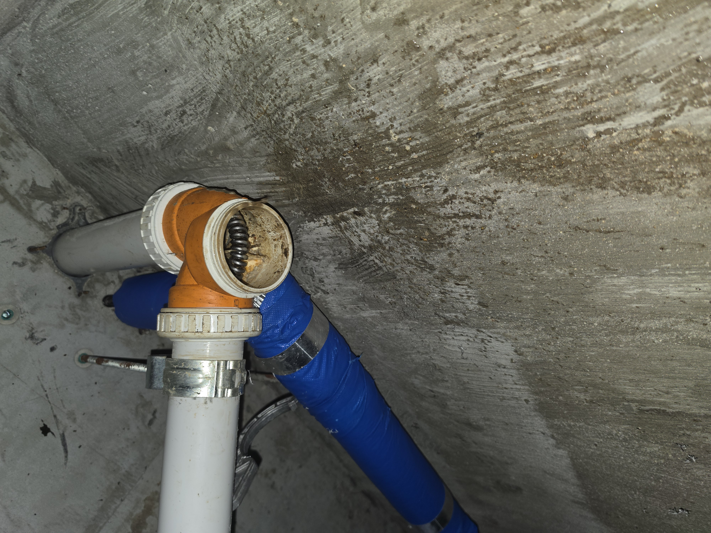
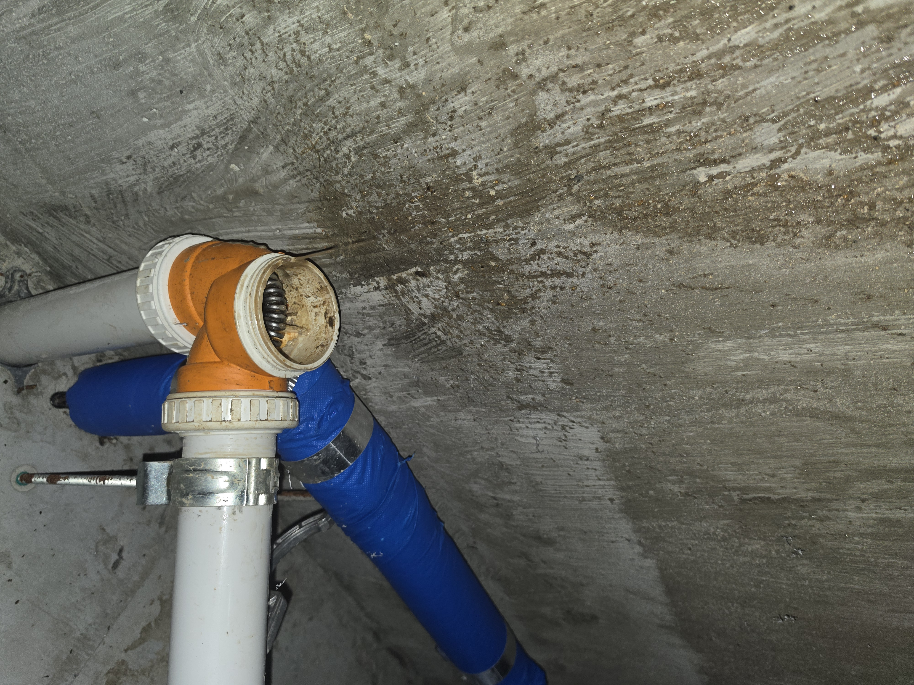
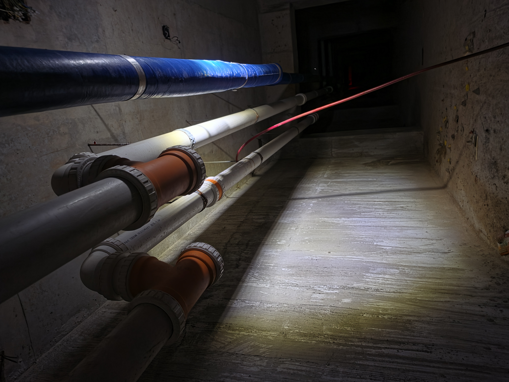
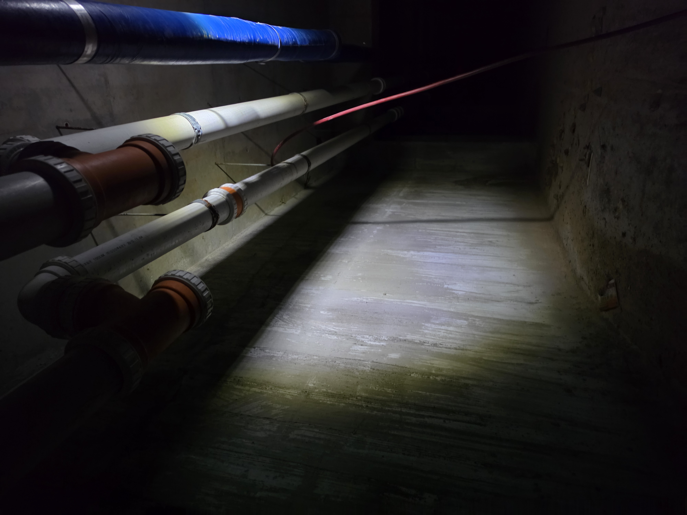
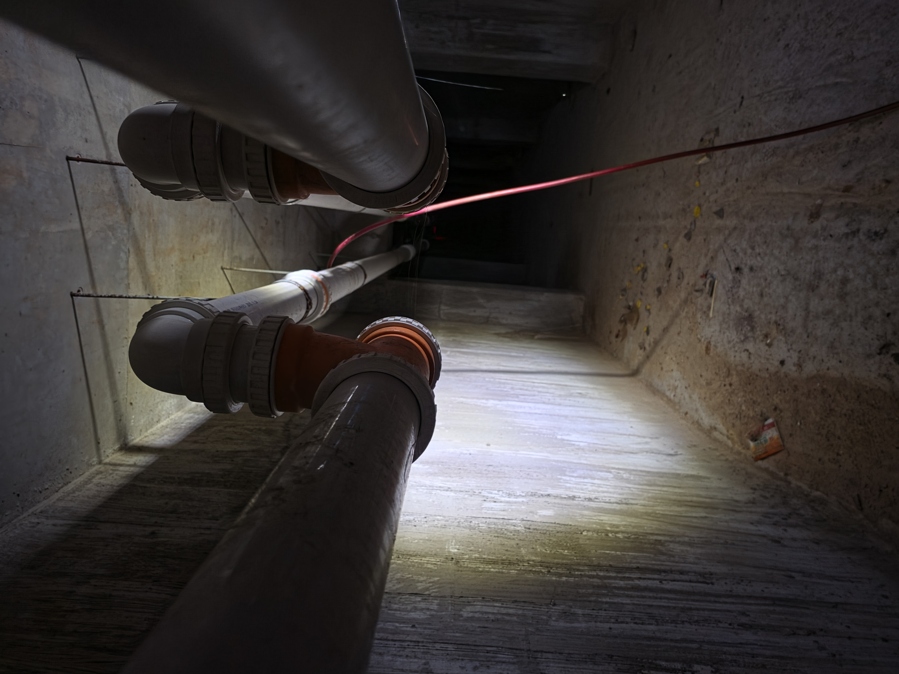

현장 상황
김포시 감정동 상가에서 진행한 실제 배관 작업입니다. 여러 호실이 입점해 있는 상가로 1층에 식당이 많아 지하 배관에서 고압세척 작업을 진행했습니다. 고압세척 후에도 물이 원활하게 내려가지 않는 상가 호실은 지하에서 해당 호실의 개별 P트랩을 열어 확인했습니다. P트랩과 배관에 남아 있는 기름기를 스프링 장비로 청소해 막힌 구간을 추가로 작업했습니다.
실제 작업사진





상가 배관은 여러 호실의 배수 상태와 배관 연결 구조를 함께 확인해야 합니다.
고압세척 후에도 특정 호실의 배수가 원활하지 않을 경우
개별 P트랩과 연결 배관의 막힘 상태를 추가로 확인해 작업합니다.
감정동 하수구·배관 상담
상가 하수구막힘, 싱크대막힘, 배수구막힘, 배관 고압세척 및 배관 관련 상담이 필요하시면 현재 증상을 말씀해 주세요.
☎ 010-9991-2453 전화상담